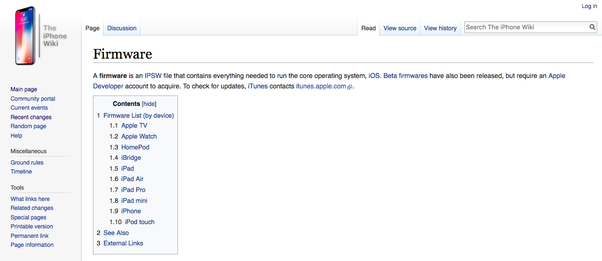
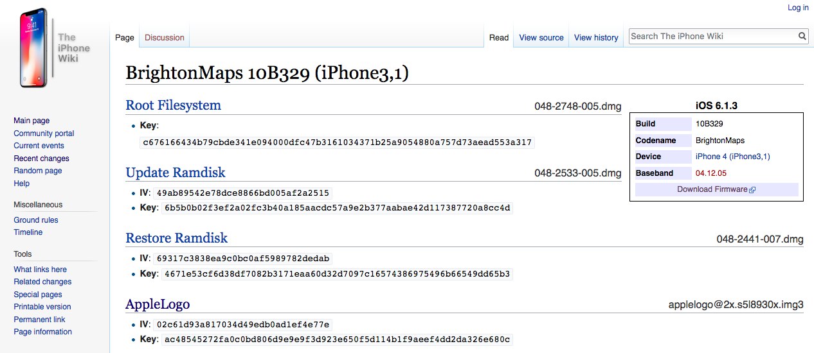
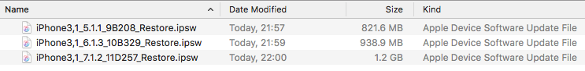
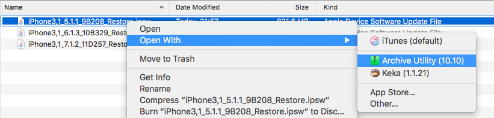
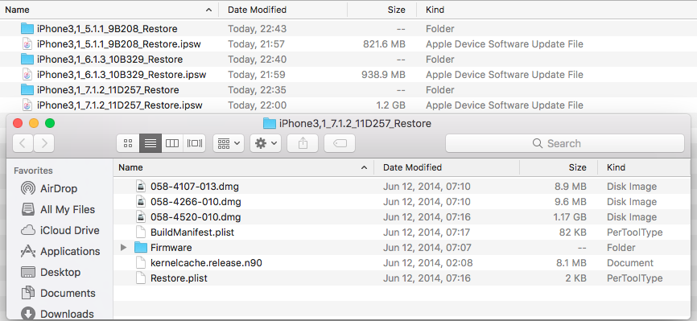

Downloading firmwares
Download the .ipsw files of secondary iOS instances you would like to install on your device from theiphonewiki.https://www.theiphonewiki.com/wiki/Firmware

Before download the .ipsw files, be sure that decryption keys are listed on the firmware page. Otherwise, it won't be possible to use firmware images for this multi-boot method.

Once desired .ipsw files are downloaded, rename the .ipsw file extension to .zip then extract it using 7zip or similar software. If you are on MacOS, you can directly extract it using Archive Utility, without renaming the file extension.


A folder with the .ipsw file content should be created.
